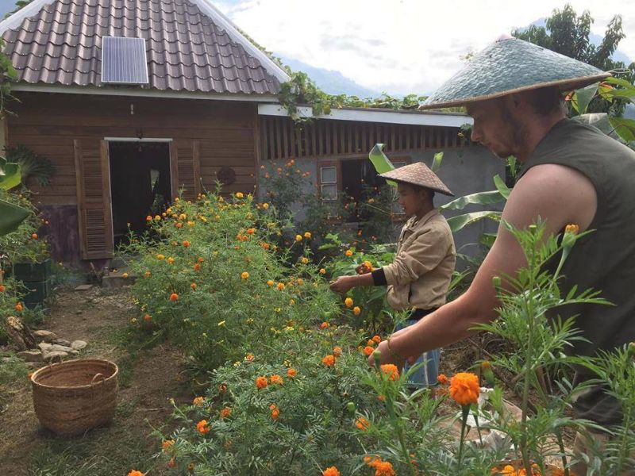

“I spent 3 weeks on Yenabai out of my 9 month travels through SE Asia and it was by far the highlight of my trip. Xay has an amazing thing going on his farm. Although it's only a year old, it's almost self sustainable. Connected to the land and disconnected from the cloud. Meals were delicious and made with fresh ingredients from the farm, I learned a lot about cooking traditional Laos style over a fire. Accommodation was either the guest room inside the main honestead, or a tent outside, both of which were lovely. Working days could be anywhere from 8 hours to 2, depending on who comes to visit from the village, but there is always something to do. Xay also implements a strong philosophy of taking things slowly and abandoning traditional city stress and fast paced expectations. We made occasional day trips to Mouang Ngoi for supplies which was really nice as well. I felt fuller, refreshed, a little sore from digging, and ready for the next leg of my journey. Yensabai is a magnificent project and way of living. I cannot recommend more highly.”
“I spent three days and four nights with Xay working on Yensabai. For me, it was an idyllic time and I wish I could have stayed longer. The land is beautiful and not only did Xay make me feel super welcome but so did his family and neighbors. I helped out with different projects and chores- building a bridge, feeding the fish, planting corn, okra, and morning glory, harvesting fresh produce and helping to prepare meals. There was always more delicious food than I could eat, and I slept outside in a tent or on a mattress with a mosquito net on the porch. We played music, went to the waterfalls upstream, and spent a lot of time with language exchange. Xay is a super chill, kind, and generous guy. I highly recommend going to work and stay for whatever time you can. I hope to be back again soon.”
“We had such a wonderful experience at Yensabai. Xay is a great, respectful and generous farmer. The place is something of a little paradise. We would definitely recommend to anyone ready to learn and enjoy a simple, sustainable, autonomous and happy time! Please, don’t bring plastic or any toxic waste with you. Think of other options, respect this place.”
“We spent a wonderful week at Yensabai farm with Xay, his family and the volonteers that were there. Xay is a wise farmer, working hard to make his farm a good place for enjoying life with philosophy and happiness. We worked in the vegetable garden, helped Xay's father and coussin to cut and carry trees to make a new storage house, and served tea and coffee to the few little groups of tourists visiting a nearby waterfall. .A great occasion to discover the life of a rural valley in Laos, and Xay is also a wonderfull chef. We highly recommand Yensabai farm and hope to comeback to visit Xay soon.”
“I spent two weeks on Yensabai farm. It was my best experience of farming and countryside's life. Life without internet, just with a solar panel for recharging a flashlight or photo camera. Roosters were as an alarm clock. In the night time I was sitting by the fire and looked in to the black sky full of stars. I was feeling myself like an ancient man. High experience :) Yes, that was an ancient life. Wake up early in the morning, work in the field, cook food on fire, watch the sky in the end of a day.”
“I've spent only 10 days at the Yensabai farm but it was for me such a highlight in my long journey in Asia. Over there, I forgot everything about the hectic western lifestyle. From the rooster's crow till the stars come out, it was all about working in the land, sharing ideas, laughters of children, cooking, sharing time and experiences...all in a relaxed and friendly atmosphere. Such a quality time! Xay is an admirable person who has chosen to come back in his home land to live a responsible lifestyle by being self-sustaining and, with time, by helping the local community. A real source of inspiration! One of the key factor here is also the social life Xay has managed to bring to him (and this is, for anyone who will choose to spend some time there, the healthier ever). His garden is charming but Xay has still so many projects to run in the coming months and years so don't think twice before going there, you will just have the feeling to be in the right place, doing the right thing. And you will live an experience you'll never forget!”